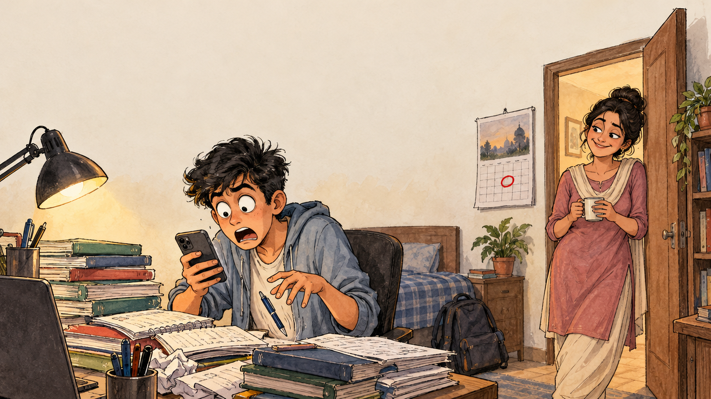

IIM KOZHIKODE BMS 2027Forms open today
IIM K test on 11 APRIL?! Not June??
Yes! Forms are out. Prep with your boards, not after 😌
The dates (official):
forms open25 Nov 2026
last date to apply20 Feb 2027
THE TEST11 April 2027
result25 April 2027
Comment "IIMK" for our April prep plan@ipmcareers